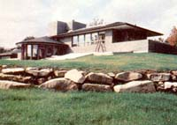

Still and all, we think the Gores/Sturges team has created one heck of a beautiful, spacious, energy-efficient suburban dwelling in their ""House For All Seasons"". We only wish more architects and energy consultants across the country would begin to follow their lead